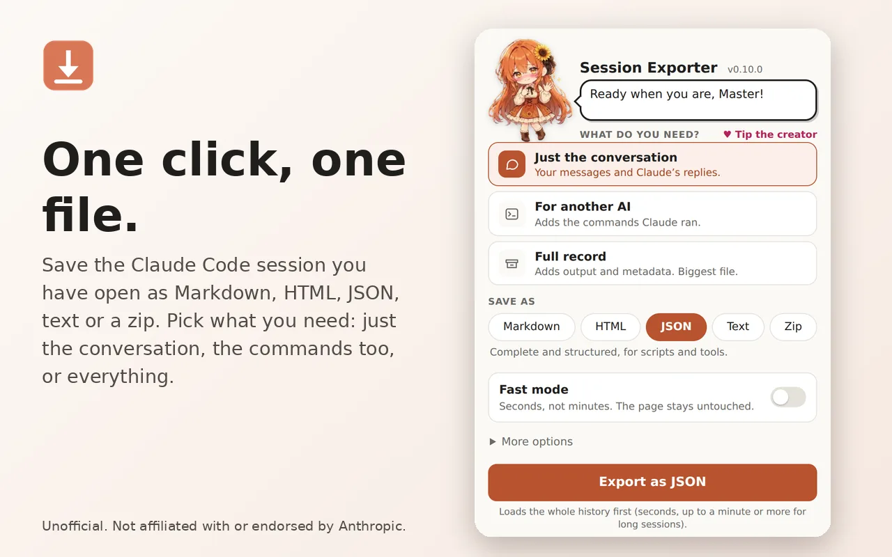
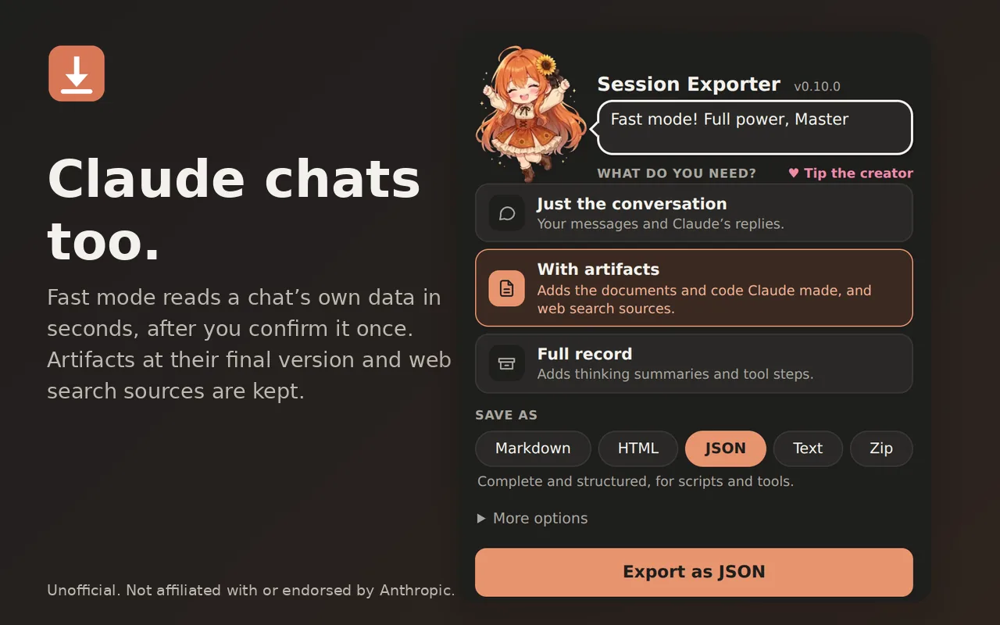
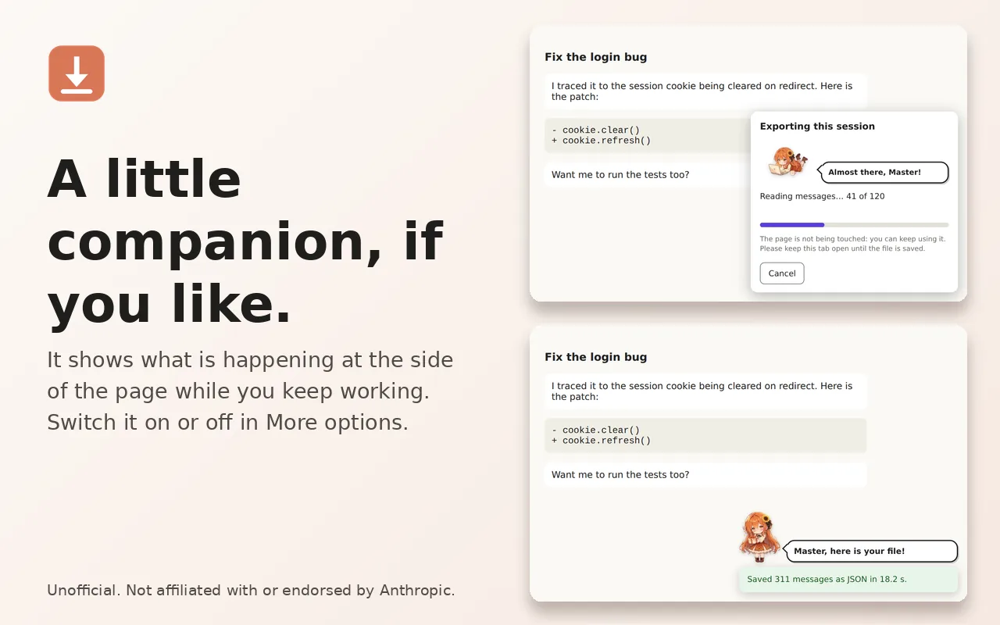
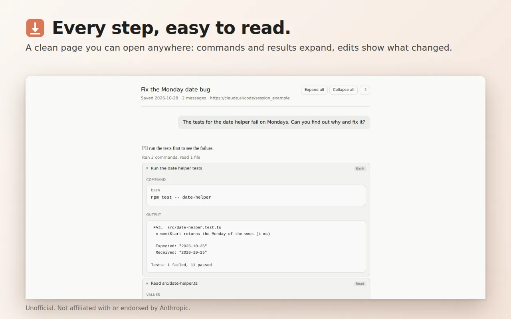

Session Exporter for Claude Code (unofficial)
Save the Claude Code session or the claude.ai chat you have open as Markdown, a readable HTML page, JSON, plain text or a zip, in one click. No account, no server, no tracking.

What you get
- Pick what you need: just the conversation, the commands Claude ran too (so another AI can follow the steps), or everything.
- Five formats: Markdown, HTML (expandable steps, light and dark), JSON, text, or one zip with all of them.
- Chats: the branch you see (and a note if you edited or retried a message), files Claude made at their final version, web search sources, optional thinking summaries.
- Fast mode: reads the session’s own data in seconds instead of scrolling the page. It asks you to confirm first, and it says plainly that it relies on an unofficial part of claude.ai.
- A small companion, if you like: a character shows what is happening at the side of the page while you keep working. It is the maker’s own creation, made with Google Flow (an AI image tool), not an official Anthropic or Claude mascot, and you can switch it off in More options.



Private by design
It works only when you click. It needs two browser permissions (the tab you are on, and scripting) and no standing access to any site. Your sessions are handled on your computer and never sent to the maker or anyone else. Read the privacy policy.
Install
Chrome and Edge: the Chrome Web Store link will appear here once the extension is published. Firefox and Safari versions are not available yet.
Support
Questions, bugs, ideas: charmszaku@gmail.com, or see the support page.
Free and open source (MIT). If it saves you time, you can support its upkeep with an optional tip: https://ko-fi.com/nelnel88. Nothing is locked.